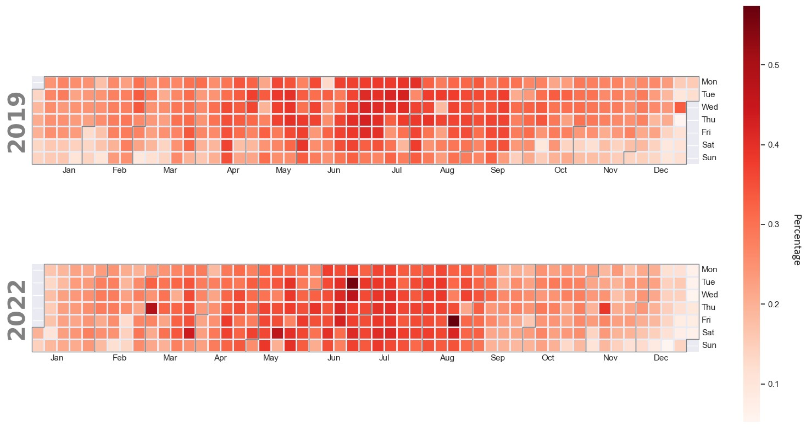

Tfl Santandar Bike Analysis Calendar Heat Plot
Analysis as part of my MSc thesis, "Using Spatio-temporal Analysis and Machine Learning to predict Transport for London bike sharing habits in the post COVID-19 era".
Bike-sharing systems offer a convenient option to efficient and sustainable urban transportation,
alleviating congestion. The growing demand necessitates continued understanding of how the systems
are used. This study examines the shifts in Transport for London bike-sharing habits during the post
COVID-19 era through exploratory and statistical analyses, focusing specifically on bike journeys
undertaken in 2019 and 2022, totalling nearly 22 million rides.
The calendar heatmap reveals how a larger proportion of bike journeys occur in the summer
months. Anomalies are visible in both years, but are more pronounced during 2022, such as
03/03/2022, 21/06/2022, 10/11/2022. On 10/11/2022 44,491 rides were recorded, whereas the
average number of rides for all other days during November was 23,412.
September was one of two months in 2022 with fewer journeys than 2019. Noteworthy events, such as changes
in the Santander Cycles fare tariff and the death of Queen Elizabeth II, likely contributed to altered transport
habits and reduced bike usage during this month (TfL, 2022a; TfL, 2022b). These atypical events are difficult to
incorporate into predictive models. The results indicate days with the highest bike usage are heavily influenced
by TfL strikes across other forms of public transport. Notably, the top four days of bike usage in 2022 coincided
with strikes on the TfL Underground system. This highlights how disruptions in other modes of transportation can
impact the utilisation of BSSs. To strengthen these findings, future studies would benefit from analysing data from
additional years, with a particular focus on 2023 once the data is made available. This approach would enable more
robust and well-informed interpretations.

Figure: Calendar heatmap of daily departures displayed as a percentage of the yearly total. Prepared by the author, using PostgreSQL for data storage and Python for plot visualisation.
References:
TfL, 2023a. Live Cycle Hire Updates. [Online] Available at: https://tfl.gov.uk/tfl/syndication/feeds/cycle-hire/livecyclehireupdates.xml [Accessed 1 April 2023].
TfL, 2023b. Cycle Hire Data - data format change & new data. [Online] Available at: https://techforum.tfl.gov.uk/t/cycle-hire-data-data-format-change-new-data/2520 [Accessed 1 April 2023].